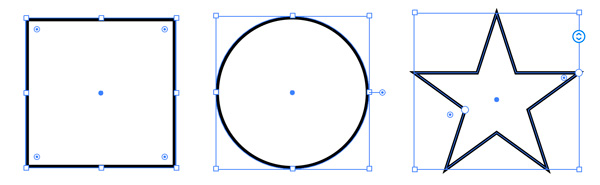
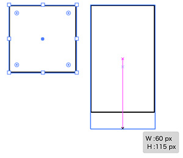
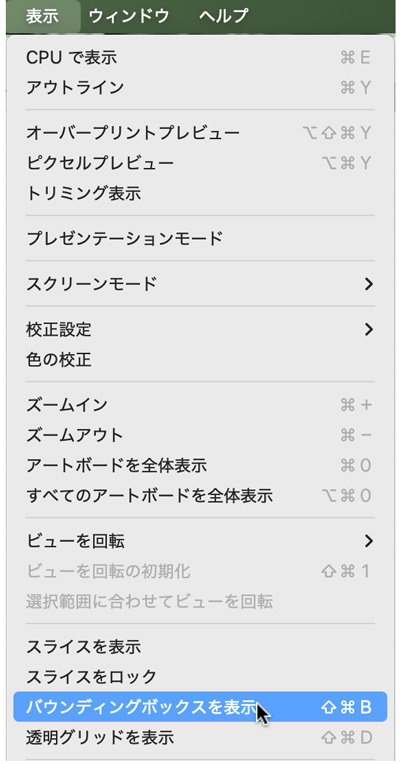
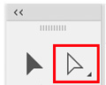
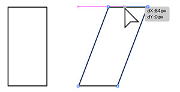
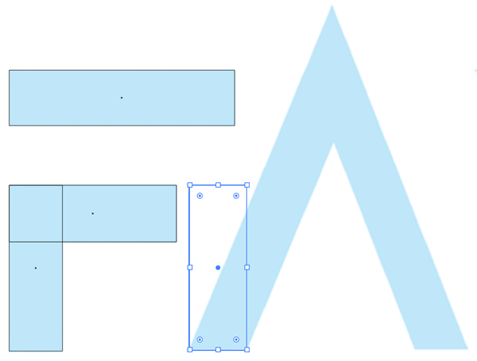
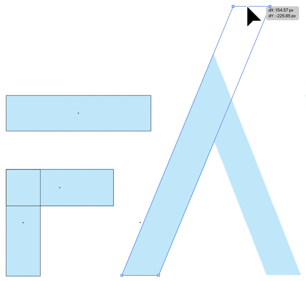

バウンディングボックス
- 長方形・楕円形・オブジェクトは「バウンディングボックス」が表示されます

長方形の変形
- 「ダイレクト選択ツール」を使わない場合
- セグメント（パス）の中央にある「白い四角」をプレス＆ドラッグすることで幅・高さを変形

- 中央の「白い四角」が見えない場合は、PCが「メモリ不足」になっている状態なので、「ダイレクト選択ツール」で変形しましょう
バウンディングボックスが表示されない場合
- 「表示」メニュー → 「バウンディングボックスを表示」にチェック

ダイレクト選択ツール

- 通称「白い矢印」を使う
- グループ化されたオブジェクトの一部分を選択することが可能
- ダイレクト選択ツールに切り替えるショートカットキーは「A」です

実例

